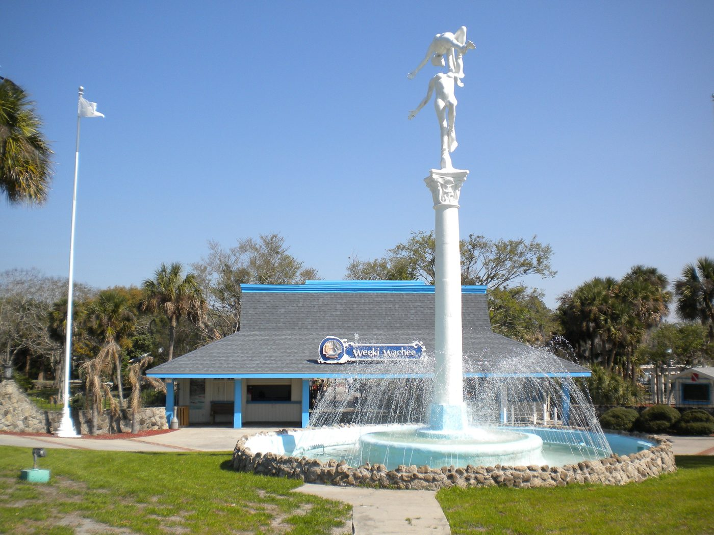
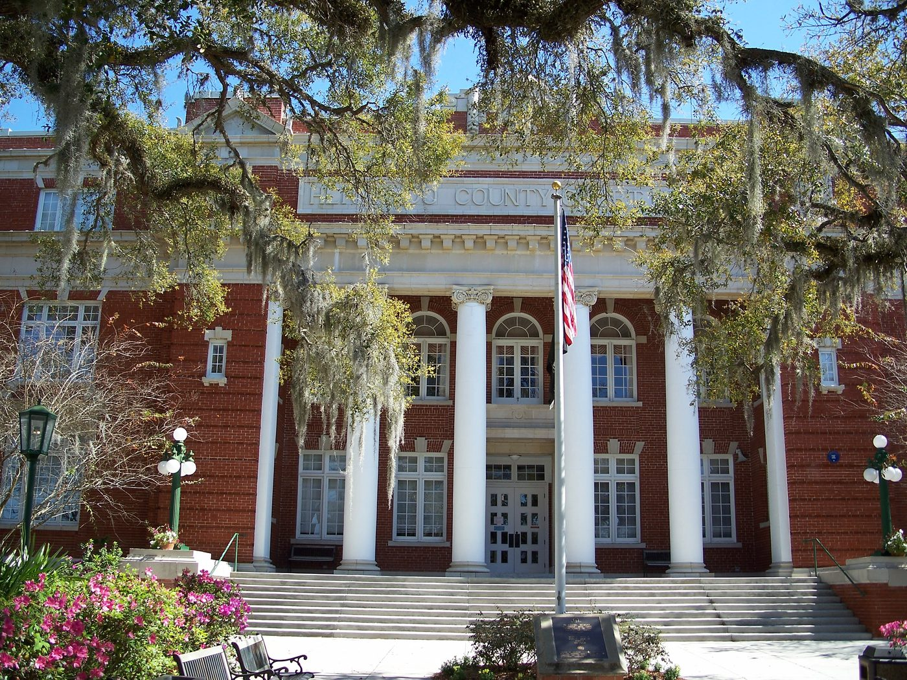
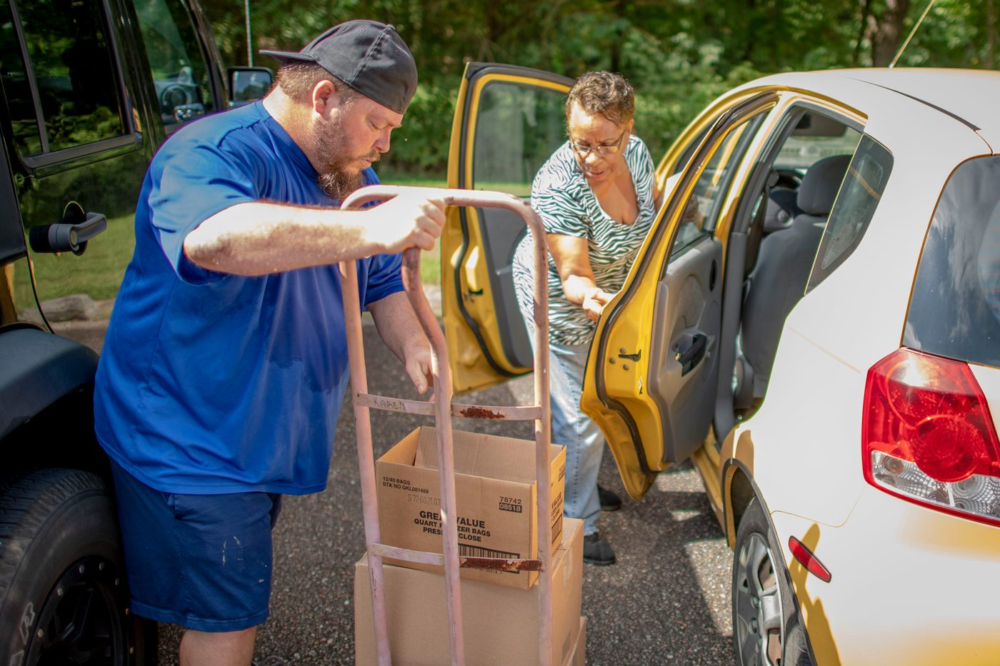
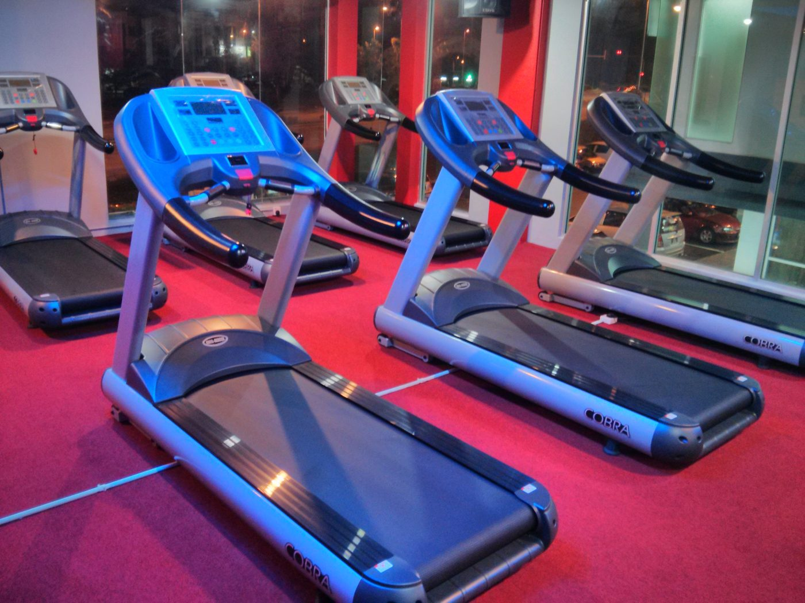
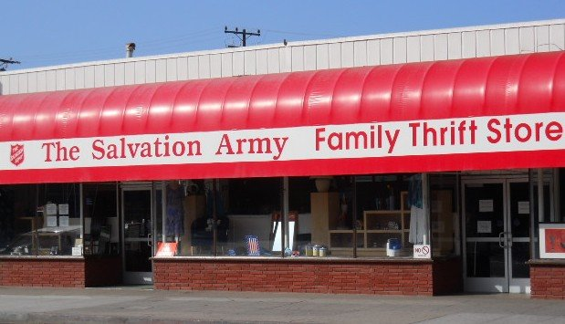

Savvy Security LLC · Community Resource Feature
Still Standing
A working survival guide for Hernando and Pasco County, Florida — for anyone experiencing homelessness, housing instability, or reentry on the Nature Coast, written for people who intend to work their way out.

“Success is to be measured not so much by the position that one has reached in life as by the obstacles which he has overcome while trying to succeed.”
— Booker T. Washington, Up From Slavery (1901, public domain)
Why this guide exists
Most “homeless resource” lists are a phone directory with no strategy attached. They tell you where the food is, but not how to string a week together. They don't tell you that a gym membership is a shower plan. They don't tell you which employers will actually look past a record. They don't tell you that the county will waive the fee on your state ID if you bring the right letter.
This guide is built around a working system, not just a list. The core idea is simple:
Everything below supports one of those five things.
A note on accuracy: every phone number, address, and schedule here was pulled from official county, sheriff's office, health department, and organizational sources current as of September 2026. Hours change constantly at small nonprofits and churches. Call before you go. A wasted bus fare is a real cost when you're counting quarters.
- 1. The System
- 2. Your First Three Calls
- 3. Documents First
- 4. Food: The Weekly Map
- 5. Showers, Laundry & Staying Presentable
- 6. Clothes for Work
- 7. Gig Work and Daily Pay
- 8. Second Chance Employment
- 9. Merchandising and Retail
- 10. Remote and AI-Assisted Work
- 11. Church, Community & Unposted Jobs
- 12. Transportation
- 13. Shelter and Housing
- 14. Health Care Without Insurance
- 15. Mental Health, Recovery & Crisis
- 16. Veterans
- 17. A Weekly Rhythm That Works
- 18. Master Phone List
Part 1 — The System
Before the lists, here's the framework that makes the lists useful.
1. The phone is the job
A working phone number and an email address are the two things that separate “unemployed” from “unreachable.” Recruiters do not leave three voicemails. A prepaid plan in the $15–$45/month range with an unlocked Android device is, functionally, your office. It is your job board, your alarm clock, your navigation, your timecard on gig apps, and the number on your resume.
If money gets thin, cut something else before you cut the phone.
Free and low-cost phone options listed in the Hernando County resource guide:
| Service | Phone | Notes |
|---|---|---|
| Lifeline (federal phone cost assistance) | 800-234-9473 | Income-based discount program |
| Assurance Wireless | 888-898-4888 | assurancewireless.com |
| SafeLink Wireless | 800-723-3546 | safelinkwireless.com |
Public libraries in both counties offer free WiFi and computer use — including printing resumes. The Hernando County Public Library system has four branches (Brooksville main, East and West Brooksville, Spring Hill). Pasco County libraries also sell GoPasco bus passes at select branches.
2. The gym is the shower
This is the single most underrated move in the playbook. A $15–$25/month gym membership buys you a hot shower, a locker, a bathroom with a mirror to shave in, air conditioning, WiFi, a place to charge devices, and — critically — a legitimate reason to be somewhere at 5 a.m. that nobody questions.
Showing up to a merchandising shift clean and pressed is worth more than any line on a resume. Details are in Part 5.
3. Daily pay beats a paycheck
When you're unhoused, a two-week pay cycle is a trap. Work that pays same-day or next-day — merchandising gigs, staffing agencies, gig platforms, and employers using earned-wage-access apps — lets you convert labor into food, fare, and phone credit immediately. It also means a bad week doesn't compound into a catastrophic month.
4. Merchandising and retail are the fastest doors
Retail merchandising, resets, and stocking are the highest-probability work for someone in your position, and here's why:
- Background checks are often lighter than warehouse, healthcare, or anything cash-handling or licensed
- No prior experience required — most postings explicitly say training is provided
- Daytime hours in stores that are on bus routes
- Independent work — you're handed a planogram and left alone
- It scales into supervision — reset team lead, then territory manager
It's not glamorous. It is reliable, and it stacks.
5. Community is not optional
The strongest predictor of getting out is not how hard you work. It's how many people know your name and know you're reliable. Co-ops, churches, recovery meetings, and volunteer shifts are where informal job leads live — the ones that never get posted. Part 11 covers this in detail.
Part 2 — Your First Three Calls
If you are reading this and just became homeless, or are about to be, make these calls in this order.
Call 1: Dial 2-1-1
Free, 24/7, and it's the front door to everything else.
- Hernando: dial 211, or United Way of Hernando at (352) 688-2026
- Pasco: dial 211, or Crisis Center of Tampa Bay Pasco line at (877) 211-9274
Call 2: Get on the housing list (Coordinated Entry)
You cannot get into most housing programs without a formal housing assessment on file. This is the gatekeeper. Do it early, because the list moves slowly.
- Hernando County — Mid Florida Homeless Coalition: (352) 860-2308. They are the lead agency for the four-county Continuum of Care (FL-520: Citrus, Hernando, Lake, Sumter). Call to schedule a housing assessment. Email: info@midflhc.org
- Pasco County — Coalition for the Homeless of Pasco County: (727) 842-8605, 5652 Pine Street, New Port Richey. Case management, resources, and referrals are offered Monday, Wednesday, and Friday from 10 a.m. to 2 p.m., with financial and housing assistance when funding is available.
- Hernando County Housing & Supportive Services: (352) 540-4338, 621 W. Jefferson St., Brooksville. They run a homelessness assistance intake and eligibility assessment.
- Veterans (either county): National Call Center for Homeless Veterans, (877) 424-3838. Also St. Vincent de Paul CARES — veterans (727) 484-6905, non-veterans (727) 756-1952.
Call 3: CareerSource Pasco Hernando — ask for Reentry
If you have a record, this is your most valuable phone call in the region. Details in Part 8.
- Reentry line: (727) 484-3400 ext. 3023 | reentry@careersourcepascohernando.com
Part 3 — Documents First
Nothing works without ID. Not a job, not a bank account, not a shelter bed, not a gig app signup.

Florida ID card — free if you're homeless
Florida waives the ID card fee entirely for people experiencing homelessness. This is the single highest-value bureaucratic fact in this guide.
What you need:
- A homeless certification letter from a homeless shelter, public assistance agency, halfway house, local school district homeless education liaison, or DCF Homeless Youth Certification
- The letter must be dated within 90 days of when you apply, and must be presented every time
- Original documents proving legal name, lawful presence, and Social Security number
Important limits: the waiver applies to the ID card, not a driver license. A no-fee homeless ID cannot be renewed or replaced online or by mail — you have to go in person.
If you don't qualify for the full waiver but are at or below 100% of the federal poverty level, a reduced-fee ID (around $6.25) is available with poverty-level certification.
Where to get the certification letter in Hernando: People Helping People, Jericho Road Ministries, Daystar, the Salvation Army, or Hernando County Health & Human Services.
In Pasco: Coalition for the Homeless of Pasco County, Metropolitan Ministries, The Volunteer Way, or Be A Light Mission.
Where to apply: Hernando County Tax Collector driver license offices, or an FLHSMV service center. Call ahead to confirm they'll accept your specific certification letter and ask which form they want (the state uses a homeless certification form — ask for it by name when you call).
Birth certificate and Social Security card
- Social Security card replacement: Social Security Administration, (800) 772-1213. Free.
- Birth certificate: if born in Florida, through the Florida Department of Health. DOH-Hernando: (352) 540-6800. There is a fee, but caseworkers at the organizations above can sometimes cover it.
- The Volunteer Way Moon Lake Mission (Pasco), 10008 Moon Lake Road, New Port Richey, (727) 815-0433, Mon–Fri 10 a.m.–2 p.m., helps specifically with ID verification, SNAP applications, Medicare/Medicaid, and job search.
- Homeless Helping Homeless in Tampa, (813) 415-3586, 801 East St. Clair Street, provides birth certificate help, free showers, storage, WiFi and phone services, bus passes, and hygiene kits — worth the trip if you're stuck.
Benefits
- ACCESS Florida (SNAP / food stamps / Medicaid / cash assistance): (866) 762-2237 or myflfamilies.com. You do not need a permanent address to receive SNAP.
- Hernando County ACCESS Florida application help: (352) 540-4338
- Food stamp line: (888) 356-3281
Part 4 — Food: The Weekly Map
This is the part people need most, so it's organized by day of the week rather than alphabetically. Cross-reference against the master list below and confirm by phone.

Hernando County — by day
Monday
- Holy Cross Lutheran — (352) 683-9016 — food, 9:30 a.m.–12:30 p.m.
- First United Methodist Church — (352) 796-3363 — Mon–Thu, 8 a.m.–4 p.m. (if available)
- Hernando Mentorship & Empowerment — (284) 444-8027 — Mon–Thu, 4–4:30 p.m.
Tuesday
- People Helping People — 11:30 a.m. lunch on site, HELP Center, 1396 Kass Circle, Spring Hill — (352) 686-4466. Showers 10 a.m.–1 p.m. Free medical clinic 10 a.m.–1 p.m.
- Jericho Road Food Barn — 1165 Howell Ave, Brooksville — (352) 799-2912 — 9 a.m.–12 p.m. Valid Hernando County photo ID required.
- Christian Life Assembly of God — (352) 597-1139 — 11 a.m.–1:30 p.m.
- Forest Oaks Lutheran Church — (352) 683-9731 — 9 a.m.–12 p.m.
- Holy Trinity Lutheran — (352) 796-4066 — 9–11:45 a.m.
- Greater Love Outreach Ministries — (352) 593-4175 — 10 a.m.–1 p.m. (also Thursday)
- Northcliffe Baptist Church — (352) 683-5882 — 2–4 p.m.
- Salvation Army — (352) 796-1186 — pantry day, 9 a.m.–11 a.m. Clothing and toiletries available every day.
- Calvary Church of the Nazarene — (352) 683-0587 — 4th Tuesdays, 10 a.m.–12 p.m.
- First Baptist Church of Spring Hill — (352) 683-2863 — 4th Tuesdays, 9:30 a.m.–12 p.m.
Wednesday
- Spring Life Church — (352) 683-2600 — 9 a.m.–2 p.m., online RSVP required, dine-in only
- Nativity Lutheran Church — (352) 597-1456 — 9:30 a.m.–12:30 p.m. (also Thu/Fri)
- Nature Coast Outreach Center — (352) 584-7764 — meals Wednesday and Friday; also gives out grocery bags and tents
- Bethlehem Baptist Church — (352) 796-4470 — 3rd Wednesdays, 5 p.m. dinner and food bag, ages 55+
Thursday
- Daystar Life Center — 7120 Hope Hill Road, Brooksville — (352) 799-5930 — food AND clothing, 9 a.m.–12:30 p.m. (Their own site lists office/pantry Thursday 9–1.)
- Nativity Lutheran — 9:30 a.m.–12:30 p.m.
- Northcliffe Baptist — 10 a.m.–12 p.m.
- Greater Love Outreach — 10 a.m.–1 p.m.
Friday
- People Helping People — 11:30 a.m. lunch, showers 10 a.m.–1 p.m.
- Nature Coast Outreach Center — meals
- Nativity Lutheran — 9:30 a.m.–12:30 p.m.
- Faith Evangelical Presbyterian Church — (352) 796-4969 — showers, meals, and clothing, 2nd and 4th Fridays
Saturday
- Grace World Church — (352) 796-3685 — 3rd Saturdays, 9–11 a.m.
- Calvary Church of the Nazarene — 3rd Saturdays, 12 p.m.
Sunday
- People Helping People — 3:30 p.m.
- Spring Hill Seventh Day Adventist — (352) 686-1143 — 2nd and 4th Sundays, 12–3 p.m.
Also in Hernando: Grace Presbyterian, (352) 683-2082 — food, clothing, and bicycles (see Transportation). Mariner United Methodist, (352) 596-0080. Hernando Hope, (571) 248-8033 — food and clothing. St. Vincent de Paul, (352) 688-3331 — Spring Hill residents only, thrift store on site.
Pasco County — by day
Monday–Friday, daily
- Calvary Chapel — 6825 Trouble Creek Rd., New Port Richey — (727) 376-7733 — pantry Mon–Fri 10 a.m.–1 p.m.
- Metropolitan Ministries West Pasco — 3214/3216 US Hwy 19 N, Holiday — (727) 937-3268 — Mon–Fri 9 a.m.–5 p.m. — three hot meals daily, plus housing assistance, counseling, GED prep, job training, SNAP help
- The Volunteer Way Soup Kitchen — 10012 Moon Lake Road, New Port Richey — (727) 815-0433 — Mon–Sat 10 a.m.–12 p.m. — and free showers plus free clothing Mon–Fri 9–11:15 a.m.
- Our Lady Queen of Peace / St. Vincent de Paul — 5340 High St., NPR — (727) 849-7521 — Mon & Fri 10 a.m.–12 p.m., Tue & Thu 12–2 p.m.
- St. Michael the Archangel / SVdP — 8020 SR 52, Hudson — (727) 857-5818 — Mon–Thu 1–3 p.m.
- Helping Rock Inc. — 14801 7th Street, Dade City — (813) 779-5521 — thrift store and pantry; food distribution Wednesday and Friday from 10 a.m. until it runs out
- Christian Social Services — 5514 Land O' Lakes Blvd. — (813) 995-0088 — pantry Tue–Sat 10 a.m.–4 p.m.
Monday / Thursday
- St. Thomas Aquinas / SVdP — 8320 Old County Rd 54, NPR — (727) 372-8600 — 9:30–11 a.m. and 1:30–3 p.m.
- Chancey Road Christian Church — 34921 Chancey Rd., Zephyrhills — (813) 317-7975 — campus pantry Mon & Thu 10–11 a.m.
- St. James the Apostle / SVdP — 8400 Monarch Dr., Port Richey — (727) 852-8580 — Mon, Thu, Fri 10 a.m.–12 p.m.
Monday / Wednesday
- St. Peter the Apostle / SVdP — 12747 Interlaken Rd., Trinity — (727) 264-8968 — 10 a.m.–12 p.m.
- Community Congregational Church — 6533 Circle Blvd., NPR — (727) 849-1943 — healthy lunch Mon, Wed, Fri 11 a.m.–12 p.m.
Tuesday
- Father & Son Love Free Food Pantry — 21418 Carson Dr., Land O' Lakes — (813) 846-9993 — 12–2 p.m. (also Fri 12–3 p.m.)
- Hicks Road Baptist — 12219 Hicks Rd., Hudson — (727) 863-5959 — 10 a.m.–12:45 p.m. (also Thu), located behind the church
- Holiday Community Fellowship Church — 5144 Sunray Dr., Holiday — (727) 944-4773 — dinner Tue & Thu 5–6 p.m.
- King of Kings Lutheran — 10337 US-19, Port Richey — (727) 868-5744 — mobile pantry 2nd Tuesday, 3–4:30 p.m.
- Chancey Road mobile pantry @ Shepherd Park — 4:30–5:45 p.m.
Wednesday
- Faith Evangelical Lutheran — 5443 Sunset Rd., NPR — (727) 849-4418 — 9–11:30 a.m. FL driver license or ID with local address required
- Hudson First United Methodist — 13123 US-19, Hudson — (727) 868-6178 — drive-thru pantry 9 a.m.–12 p.m.
- First Baptist Church of Hudson — 7009 Hudson Ave. — (727) 378-5885 — 10 a.m.–12 p.m.
- Seventh-Day Adventist — 6424 Trouble Creek Rd., NPR — 11 a.m.–1 p.m.
- Shady Hills Mission Chapel — 15925 Greenglen Ln., Spring Hill — (727) 856-2948 — 9 a.m.–1 p.m.
Friday
- Gulfview Grace Church — 6639 Hammock Rd., Port Richey — (727) 862-7777 — 8–11 a.m.
- Chancey Road mobile pantry @ 1655 Partridge Blvd — 9:30–11 a.m.
Saturday
- Pasadena Baptist Church — 35845 Clinton Ave., Dade City — (352) 521-0545 — 8–10:30 a.m.
Also: Be A Light Mission Service Center, 8425 Arcola Ave., Hudson — food pantry, clothing pantry, medical assessments, employment assistance and work programs. They also maintain a live community resource calendar at bealightmissions.org — bookmark it.
Metropolitan Ministries East Pasco, 13703 17th Street, Dade City, (352) 437-4815 — rent/utility assistance, food stamp applications, food pantry, clothing closet.
UF/IFAS Pasco County One Stop Shop, 15029 14th St., Dade City, (352) 521-1254, Mon–Fri 8 a.m.–5 p.m. — food pantry, bus passes, and interview clothes.
Part 5 — Showers, Laundry, and Staying Presentable
Free shower access
| Location | County | Schedule |
|---|---|---|
| People Helping People HELP Center, 1396 Kass Circle, Spring Hill | Hernando | Tue & Fri, 10 a.m.–1 p.m. |
| Faith Evangelical Presbyterian Church, (352) 796-4969 | Hernando | 2nd & 4th Fridays (showers, meals, clothing) |
| The Volunteer Way, 10012 Moon Lake Rd, NPR | Pasco | Mon–Fri, 9–11:15 a.m. (showers + free clothing) |
| Faith Café, 1340 N Clearview Ave, Tampa, (813) 877-6889 | Hillsborough | On-site showers, first come first served; Angel Closet Tue/Thu/Sat; off-site laundry 2nd & 4th Saturdays |

The gym strategy — cheapest memberships
For daily, reliable, 24-hour access, a gym membership is the most cost-effective hygiene solution available. Nationally, Planet Fitness lists Classic at $15/month and the PF Black Card at $24.99/month, both subject to an annual fee (commonly $49) and a possible startup fee. Pricing varies by club, so confirm at the location.
Why the Black Card is usually the right call for someone unhoused: it gives access to all locations rather than just your home club. If your work territory shifts between Spring Hill, Brooksville, Hudson, and Zephyrhills, one-club access will strand you.
24-hour Planet Fitness locations in the area:
| Location | Address | Phone |
|---|---|---|
| Spring Hill | 11156 Spring Hill Dr, Spring Hill, FL 34609 | (352) 614-1653 |
| Brooksville | 13003 Cortez Blvd, Brooksville, FL 34613 | (352) 600-7701 |
| Bayonet Point | 12225 US Hwy 19, Hudson, FL 34667 | (727) 378-7940 |
| Holiday | 4637 Sunray Dr, Holiday, FL 34690 | (727) 935-4818 |
| Zephyrhills | 7910 Gall Blvd, Zephyrhills, FL 33541 | (813) 355-3684 |
Other options:
- Anytime Fitness — 24/7 keyfob access, roughly $35–45/month. Locations include 1267 Wendy Ct, Spring Hill and 9573 Commercial Way, Weeki Wachee.
- YMCA — Hernando County YMCA, 1300 Mariner Blvd., Spring Hill, (352) 688-9622. More expensive on paper (typically $40–65/month), but the YMCA has income-based financial assistance and scholarship programs. If you're low income, ask directly for the financial assistance application. Many people don't know to ask.
- Crunch Fitness and YouFit run promotional tiers in the $10–$25 range in the Tampa Bay market. Worth a call.
Practical notes: most gyms require a bank account or debit card for autopay. If you don't have one, open a free account at a credit union first — several accept a state ID and a small opening deposit. Keep your gym bag minimal so it reads as a gym bag, not luggage.
Laundry
- Faith Café (Tampa) — off-site laundry service, 2nd and 4th Saturdays
- Nature Coast Ministries and several Hernando churches provide laundry access — call 211 and ask specifically for “laundry assistance”
- Budget option: wash and dry a single load at a laundromat weekly ($5–8) rather than accumulating. Rotate two work outfits.
Part 6 — Clothes for Work
You need two things: interview clothes and durable work clothes. They're different problems.

Free clothing
| Source | County | Details |
|---|---|---|
| Salvation Army Hernando, (352) 796-1186 | Hernando | Clothing and toiletries available every day |
| Daystar Life Center, 7120 Hope Hill Rd, Brooksville, (352) 799-5930 | Hernando | Food and clothing, Thursdays |
| Faith Evangelical Presbyterian, (352) 796-4969 | Hernando | Clothing, 2nd & 4th Fridays |
| Grace Presbyterian, (352) 683-2082 | Hernando | Food, clothing, bicycles |
| Hernando Hope, (571) 248-8033 | Hernando | Food and clothing |
| The Volunteer Way, (727) 815-0433 | Pasco | Free clothing Mon–Fri 9–11:15 a.m. |
| Metropolitan Ministries East Pasco, (352) 437-4815 | Pasco | Clothing closet |
| UF/IFAS One Stop Shop, Dade City, (352) 521-1254 | Pasco | Interview clothes specifically |
| Be A Light Mission, Hudson | Pasco | Clothing pantry |
| Hudson Community Health & Resource Center, 14410 Cobra Way, (352) 518-2000 | Pasco | Clothing closet, Mon–Fri 7:30 a.m.–4 p.m. |
| Faith Café Angel Closet, Tampa, (813) 877-6889 | Hillsborough | Clothes, blankets, coats, toiletries — Tue, Thu, Sat |
Cheap thrift stores
Jericho Road Thrift Stores (Hernando/Pasco) — four locations, all open Monday–Saturday 9 a.m.–5 p.m., with sales up to 70% off, a monthly 50%-off-everything sale day, and 15% off for current and former military with ID:
- 15000 County Line Road, Spring Hill, FL 34610
- 5260 Commercial Way, Spring Hill, FL 34606
- 31170 Cortez Blvd., Brooksville, FL 34602
- 16479 Wiscon Road, Brooksville, FL 34601
DayStar Thrift Shops — Brooksville, behind St. Anthony's off Hope Hill Rd. Open Thursday, Friday, Saturday 9 a.m.–1 p.m. They run BOGO Thursdays — buy one get one free. For clothing, that's the cheapest hour in the county.
Others: St. Vincent de Paul thrift store (Spring Hill), Helping Rock thrift (Dade City), Daystar Hope Center thrift (15512 Hwy 301, Dade City, Tue–Thu 9 a.m.–12 p.m.), Goodwill Suncoast locations throughout both counties.
What to actually buy
For merchandising and retail work: khakis or dark jeans, plain polo shirts in navy/black/gray, closed-toe non-slip shoes, a black belt. Two of each. That's the uniform for 80% of the work you'll be applying for. Skip the suit unless you're interviewing for an office role — for retail, an over-dressed applicant reads as a poor fit.
Non-slip shoes matter. Many retail and food employers require them, and it's a common reason people lose a first shift.
Part 7 — Getting Paid This Week: Gig Work and Daily Pay
The merchandising gig platforms
These let you pick up individual paid shifts and tasks, usually without an interview.
Shiftsmart — retail merchandising, resets, and various shift work. Background checks are handled by a third party and are role-dependent — not every role requires one. Note the process: you have to select a shift first, then submit the background check through onboarding. If no shifts appear, they aren't operating in your area at that moment. Checks can take up to seven days depending on court records and residence history. Instant cash-out is available for a small fee.
GigSmart (Get Gigs app) — warehouse, construction, food service, retail, delivery, cleaning. No interviews or resumes required. Same-day payment through the app. Background checks are optional per shift — they only run when you accept a “Verified Shift” that requires one, and they're run by Checkr covering SSN trace, sex offender registry, global watchlist, and national criminal database. GigSmart also has a job board for full-time and part-time roles. Includes occupational accident insurance.
Instawork — hospitality, warehouse, retail. Vets workers across many data points before approval; operates in 60+ cities. Daily pay becomes available once you hit performance thresholds.
Others worth having on the phone: Traba (industrial), Wonolo, Bluecrew, Veryable (industrial), Gigpro (food and beverage).
Honest advice on background checks: a felony does not automatically disqualify you from these platforms, but it depends on the client and the role. Merchandising and warehouse roles tend to be the most accessible; anything involving driving, minors, or cash handling is tighter. Apply to several platforms rather than betting on one.
Staffing agencies — walk in, work tomorrow
These are the old-school version of the same thing and they still work. Several in this area do day labor and next-day placement:
| Agency | Location | Phone |
|---|---|---|
| Labor Finders Brooksville | Brooksville | (352) 593-9400 |
| PeopleReady | 7902 US 19, Port Richey | (727) 847-4268 (Mon–Fri 5:30 a.m.–5:30 p.m.) |
| PeopleReady Hernando | Hernando | (352) 796-3264 |
| Spherion Staffing | 33 Ponce De Leon Blvd., Brooksville | (352) 796-6000 |
| Express Employment | 6645 Ridge Rd., Port Richey | (727) 376-8891 |
| Integrity Staffing Services | Hernando | (352) 678-4019 |
| Kelly Services | Hernando | (352) 519-1555 |
| IR Staffing | Hernando | (352) 593-5054 |
| Goodwill Temporary Staffing | Regional | (727) 577-6411 |
Show up early. Labor halls fill in order of arrival, not appointment.
Earned wage access
Apps like DailyPay, Payactiv, Branch, and Even let you draw earned wages before payday if your employer participates. When you're comparing two otherwise identical job offers, ask in the interview: “Do you offer daily or on-demand pay?” It is a legitimate question and it separates a workable job from an unworkable one.
Many large retail, restaurant, and warehouse employers in the Tampa Bay market now offer some form of it. Ask before you accept.
Part 8 — Second Chance Employment
“Without a struggle, there can be no progress.”
— Frederick Douglass, 1857 (public domain)
CareerSource Pasco Hernando — start here
This is the region's workforce agency, and it is free. Three offices serve both counties:
| Office | Address | Phone | Hours |
|---|---|---|---|
| New Port Richey | 4440 Grand Blvd, New Port Richey, FL 34652 | (727) 484-3400 | Mon–Wed 8–5, Thu 7:30–5:30, Fri 8–5 |
| Brooksville / Spring Hill | 16228 Spring Hill Drive, Brooksville, FL 34604 | (352) 200-3020 | Mon–Fri 8–5 |
| Dade City | 13906 Fifth Street, Dade City, FL 33525 | — | Mon–Fri 8–5 |
Virtual hours run Mon–Fri 5–7 p.m. and Saturday 8 a.m.–5 p.m.
Ask specifically for these three things:
1. The Federal Bonding Program. This is the most important tool most people have never heard of. It provides free fidelity bonding to employers who hire people with criminal backgrounds, poor credit history, no work history, substance abuse history, or a dishonorable discharge. In plain terms: it's a free insurance policy that removes the employer's stated reason for saying no. CareerSource front-line staff are trained to give you the bonding information to hand directly to a prospective employer. Walk into interviews with this paperwork. It changes the conversation from “we can't risk it” to “we're covered.”
2. The Workforce Reentry Program. Funded by Penny for Pasco and administered by CareerSource Pasco Hernando, this provides reentry assistance to Pasco County residents, specifically targeting people who are homeless, veterans, or formerly incarcerated. Funds go largely toward training tuition, with a faster turnaround than traditional apprenticeships. Services include assessment and training, work maturity, work search registration, marketable skills and certifications, and customized employer training.
Contact: (727) 484-3400 ext. 3023 | reentry@careersourcepascohernando.com
3. WIOA training funds. The Workforce Innovation and Opportunity Act pays for occupational training for eligible people with barriers to employment — explicitly including homeless individuals and ex-offenders. Forklift, CDL, HVAC, welding, CNA, IT certifications. Ask what's on the approved training provider list.
CareerSource has also historically partnered with the Hernando County Sheriff's Office to train inmates scheduled for release within six months, including Certified Production Technician (MSSC) certification plus Microsoft Office and QuickBooks, with job placement help after release. If you're currently inside or just out, ask about it.
Also worth knowing: Eckerd Connects Paxen operates a reentry program at 16336 Cortez Blvd, Brooksville, (352) 251-7164 — though it serves youth and young adults only.
PRIDE Enterprises — 1463 Oakfield Drive #126, Brandon, (813) 324-8700 — works specifically with formerly incarcerated Floridians.
Second-chance job boards
| Platform | What it is |
|---|---|
| Honest Jobs (honestjobs.com) | The leading fair-chance platform, founded 2018 by a formerly incarcerated founder. Free for job seekers. You enter your conviction history; it is not shared with employers. Their “Conflix” system analyzes job descriptions against your record and color-codes listings by how likely you are to clear that employer's background check. Over 160,000 justice-involved job seekers on the platform. |
| Employ Florida (employflorida.com) | The state's official job bank. Free registration, resume posting, thousands of listings, mobile app. This is where CareerSource job orders live — including “suppressed” job orders that aren't posted publicly and require a CareerSource staff referral. Ask CareerSource to screen you for suppressed job orders. |
| 70 Million Jobs | National second-chance job board |
| Indeed / ZipRecruiter | Search the literal phrases “second chance,” “fair chance,” and “felony friendly” |
| GigSmart Job Board | Full and part-time listings alongside the gig shifts |
How to handle the record in an interview
Three sentences, then stop talking:
- What happened, plainly and without excuse.
- How long ago it was and what has changed since.
- What you've been doing consistently since then.
Then hand them the Federal Bonding information and let the conversation move on. Do not volunteer it before you're asked unless the application asks directly — and answer honestly when it does, because a discovered lie ends the job, while a disclosed record often doesn't.
Employers with track records of fair-chance hiring
Nationally and in Florida, these categories hire the most consistently: construction, manufacturing, warehousing and distribution, landscaping, restaurant back-of-house, retail merchandising, and staffing agencies. Goodwill is a mission-driven second-chance employer with on-the-job training. Florida state government uses ban-the-box for state jobs.
Be skeptical of websites that publish “lists of companies that hire felons.” Corporate policies change, and franchise locations set their own rules. Verify locally, one hiring manager at a time. The manager in front of you matters more than the corporate policy.
Part 9 — Merchandising and Retail: The Fastest Path
If you take one strategic recommendation from this guide, take this one.
Who's hiring in Hernando and Pasco
SAS Retail Services — retail merchandiser roles in Brooksville and Spring Hill, recently posted around $13–14/hour. No prior experience required; training and team support provided. Requirements: 18+, able to lift 50 lbs, reliable transportation, comfortable with customers. Benefits available including medical, dental, vision.
CROSSMARK (part of Acosta) — merchandiser and reset merchandiser roles across Spring Hill, Brooksville, Hudson, Land O' Lakes, and Zephyrhills, in the $15–17/hour range. Founded 1908, 30,000+ associates. What they offer that matters to you: weekly pay, paid training, paid drive time between stores plus mileage reimbursement, flexible daytime hours with no required nights or weekends, and benefits including 401(k). Requirements: 18+, available roughly 8 a.m.–5 p.m., access to a smart device, ability to lift 25 lbs regularly and 50 occasionally, reliable transportation.
Also operating in this market: Acosta, Advantage Solutions, Premium Retail Services, Driveline, SPAR, Jacent, Apollo Retail. Apply to all of them. Reset crews travel, so a company with no Brooksville opening today may have a Spring Hill reset next week.
The strategy
- Apply to every merchandising company simultaneously, not one at a time. They staff by project.
- Take the reset work. Resets are large-scale store rearrangements — tearing down and rebuilding sections to a planogram. They're physical and they're scheduled in bursts, which means overtime and travel pay.
- Learn to read a planogram fast. It's the single skill that makes you re-requestable. Once one reset crew lead knows you can follow a plan without supervision, you get called first.
- Stack it with gig platforms to fill dead days.
- After 1–2 years of experience, independent contractor reset work pays substantially more — postings for experienced reset merchandisers with SAS/Acosta/Crossmark/Advantage/Driveline/SPAR backgrounds run well above entry-level rates.
That's a real, documented career ladder that starts with a $14/hour job you can get without experience or a clean record.
Part 10 — Remote and AI-Assisted Work: An Honest Assessment
You asked about programming work for someone who can use AI tools well. Here's the truthful version, ordered from most to least accessible.
Tier 1: AI training and evaluation work (start here)
These platforms pay people to evaluate, correct, and write training data for AI models. They reward exactly the skills a strong prompt engineer already has: careful reading, clear writing, spotting subtle errors in model output, and following detailed rubrics. Most require only a computer and a bank account or PayPal.
| Platform | Reported rates | Access | Payment |
|---|---|---|---|
| DataAnnotation.tech | ~$20–40/hr (coding and reasoning tasks pay more) | US, UK, Canada, Australia, NZ. Onboarding 1–2 days | PayPal, weekly |
| Outlier (Scale AI) | ~$15–50/hr | Open in 60+ countries | PayPal/ACH, weekly |
| Mercor | Wide range, higher for specialists | Selective — ~20-minute AI interview plus assessment, 1–3 weeks | Stripe, weekly |
| Handshake AI, Mindrift, Alignerr, Micro1 | Varies | Varies | Weekly/biweekly |
Realistic expectations: most generalists starting out land in the $15–25/hour range, not the headline numbers. Work volume is inconsistent — queues dry up. Treat this as one income stream stacked on top of merchandising, not a replacement for it. The higher rates go to people with verifiable credentials or genuine coding depth.
A Chromebook is sufficient for most of this work.
Tier 2: Freelance micro-work
Upwork, Fiverr, and Contra. With strong AI-assisted output you can genuinely deliver: content writing, editing, data cleanup, spreadsheet automation, simple website building, SEO work, resume writing, and virtual assistance. The hard part is the first five reviews. Price low, deliver fast, over-communicate, and climb.
These are also the platforms where an experience gap or a record does not come up. Clients see a portfolio and a rating.
Tier 3: Arc.dev — the stretch goal, not the entry point
Be clear-eyed here. Arc.dev is free for talent and does connect developers to remote roles at real companies. But their own materials state that candidates who succeed in vetting typically have 5+ years of industry experience, and that on average only about 2.3% of candidates pass their vetting — profile screening, a communication assessment, and a technical interview or pair-programming session.
An AI assistant makes you dramatically more productive as a developer. It does not substitute for the ability to pass a live technical interview with a human engineer. Arc.dev is a realistic target in year two or three, after you've built demonstrable work. It is not a realistic answer to “I need income this month.”
The realistic path from prompt engineering to paid technical work
- Months 1–6: DataAnnotation / Outlier for income while merchandising pays the bills. Simultaneously build 3–5 real projects — a working website, a small tool, an automation — and put them in public on GitHub.
- Months 6–18: Freelance on Upwork/Fiverr. Small paid builds. Collect reviews. This is your work history.
- Months 18+: Junior developer roles, local IT contracts, or Arc.dev vetting with an actual portfolio behind you.
Free training in the meantime: Pasco-Hernando State College continuing education, (352) 796-6726. Suncoast Technical Education Center, (352) 797-7091. Hernando Adult Education for GED and ESOL, (352) 797-7018. AmSkills, 4606 Darlington Rd., Holiday, (727) 301-1282 — technical training, employability assessment, interview coaching. And ask CareerSource whether WIOA funds will cover any of it.
Part 11 — Church, Community, and the Jobs Nobody Posts
Most jobs at the level we're discussing are filled by referral, not by application. A hiring manager with three applicants and one personal recommendation hires the recommendation. That means your network is a material asset, and building one is work — real work, on the calendar, same as a shift.
Why church specifically works
It isn't about theology. It's about structure and repetition. A congregation gives you:
- Weekly reliable contact with employed people who own businesses, manage stores, and know who's hiring
- A reference — after six months of showing up, a pastor or ministry leader can vouch for your character in a way no former employer will
- A homeless certification letter for your free state ID, in many cases
- Meals, clothing, and material help without a means test
- A reason to be somewhere on Sunday that isn't a parking lot
How to actually do it (this is the part people skip)
- Pick one and stay. Rotating churches for the food line gets you food. Attending one church for six months gets you a network. Choose based on location — one you can reach on the bus every week without fail.
- Volunteer before you ask for anything. Set up chairs. Work the food pantry. Help in the kitchen. Serving in a food pantry when you also use food pantries is the single fastest way to change how people see you. You stop being a client and become a member.
- Join a small group or a recovery group. Sunday service is anonymous. Small groups are where relationships form. Grace Family Church in Lutz runs GriefShare (Thursdays 7 p.m.), DivorceCare (Tuesdays 7 p.m.), and Celebrate Recovery (Thursdays 6:30 p.m.) at 22920 SR 54.
- Tell people specifically what you're looking for. Not “I need a job.” Say: “I'm looking for merchandising or retail stocking work, I'm available weekday mornings, and I have my own transportation to Spring Hill and Brooksville.” Specific requests get referred. Vague ones get sympathy.
- Be the person who shows up. Reliability is your entire pitch. Every time you show up when you said you would, you're building the reference that eventually gets you hired.
Places to build community in Hernando and Pasco
- People Helping People HELP Center, 1396 Kass Circle, Spring Hill — hosts AA meetings every weekday evening and is available for meetings and events
- Alcoholics Anonymous — Hernando (352) 683-4597, West Pasco/Tarpon (727) 847-0777
- Narcotics Anonymous — Hernando (352) 254-4690, Pasco 24-hour (727) 842-2433
- NAMI Hernando, 4034 Commercial Way, Spring Hill, (352) 684-0004 — free support groups, grief support, and employment assistance
- NAMI Pasco, (727) 992-9653
- Recovery Epicenter Foundation, Clearwater, (813) 419-7095 — recovery community organization
- Zero Hour Life Center, (352) 765-4943 — disability application assistance and recovery community
- Volunteer through United Way of Hernando, (352) 688-2026 — volunteer hours are resume lines and references
- Vincent House, 11145 Denton Avenue, Hudson, (352) 701-0778 — vocational skills program for people living with mental health challenges
Even if you're not in recovery, these rooms are full of people who understand hard circumstances and are, as a group, unusually willing to help someone who is trying.
Part 12 — Transportation
Hernando County — TheBus
Nine routes, connecting to Pasco's system on the Purple and Blue routes, running on 60-minute headways. Info: (352) 754-4444.
| Fare type | Regular | Reduced* |
|---|---|---|
| One-way | $1.25 | $0.60 |
| One-day pass | $3.00 | $1.50 |
| 7-day pass | $10.00 | $5.00 |
| 31-day pass | $30.00 | — |
| Demand response one-way | $2.50 | — |
*Reduced fares require eligibility — call (352) 754-4444.
Pay by cash (exact change; drivers carry none), paper monthly pass, or the Token Transit app (tokentransit.com/app). Live bus tracking is available online.
The math matters: at $1.25 each way, a 31-day pass pays for itself in 12 round trips. If you're working, buy the monthly.
Route 6 (TheBus Ride) is curb-to-curb micro-transit within a 5-mile radius of downtown Brooksville. Call at least two hours ahead to schedule pickup and drop-off.
Pasco County — GoPasco
Thirteen to fourteen routes, generally 5 a.m.–8 p.m. weekdays. Info: (727) 834-3322, info@GoPasco.com, 8620 Galen Wilson Blvd., Port Richey.
| Fare type | Regular | Reduced* |
|---|---|---|
| One-way | $1.50 | $0.75 |
| One-day pass | $3.75 | $1.85 |
| 31-day pass | $37.50 | $18.75 |
| 20-ride pass | $25.00 | $12.50 |
| US Military & Veterans | FREE | |
*Reduced fares: 65+, students with valid ID, persons with disabilities, Medicare card holders. A GoPasco reduced-fare photo ID costs $2.50.
Passes available by mail, at Pasco County Government Centers, select Pasco County libraries, at the GoPasco office (VISA/MasterCard, $5 minimum), or through the Token Transit app. Children 4 and under ride free with a paying adult.
Veterans ride free on all GoPasco routes. If you served, get your documentation in order.
Other transportation help
- People Helping People, (352) 686-4466 — bus tokens
- Grace Presbyterian Church, (352) 683-2082 — bike program. A working bicycle changes your radius more than anything else on this list.
- Hernando Mentorship & Empowerment, (248) 444-8027 — vouchers and rides when available
- UF/IFAS One Stop Shop, Dade City, (352) 521-1254 — bus passes
- Medicaid Transportation — (352) 799-5177
- Paratransit / TransHernando — registration (888) 802-7483, scheduling (352) 799-1510
Part 13 — Shelter and Housing
Read this section carefully — the shelter landscape here has changed and outdated directories will send you to the wrong place.
Hernando County
Jericho Road Ministries — 1090 Mondon Hill Rd. / 11014 N Broad St., Brooksville, (352) 799-2912.
Important update: older listings across the internet describe Jericho Road as a rescue mission offering up to three nights of emergency shelter. Their own current materials state they do not presently provide overnight emergency shelter and cannot accommodate children. What they do offer is a free five-month residential recovery program at a Men's Center and a Women's Center, open to anyone 18+ willing to commit to the full program. There's no cost. You don't have to be Christian, though the program is faith-based. You must detox before entry — it's not a licensed medical detox. The first three months are education-focused with no outside employment permitted (structured work therapy instead); by month five the goal is employment. Intake requires an application and interview.
They also run the Jericho Road Food Barn (1165 Howell Ave, Tuesdays 9 a.m.–12 p.m., Hernando County photo ID required) and four thrift stores.
Other Hernando shelter and housing
| Program | Serves | Contact |
|---|---|---|
| Dawn Center | Domestic violence — women and children, accepts pets | 24/7 hotline (352) 686-8430; outreach (352) 592-1288 |
| The Life Center | Women with children under 6 (drug test required) | (352) 597-0119 |
| Joseph's House | Shelter | (352) 600-8295, office@jhbv.org |
| Shelter from the Storm | Males | (352) 339-4732 |
| New Beginnings Youth Shelter | Unaccompanied youth ages 10–17 | (352) 540-6015 |
| Hernando County Housing Authority | Section 8 | (352) 754-4160 |
| Habitat for Humanity Hernando | Homeownership | (352) 754-1159 |
| Florida Housing Search | Rental listings | (877) 428-8844 |
Pasco County
| Program | Serves | Contact |
|---|---|---|
| Coalition for the Homeless of Pasco County | Case management, financial and housing assistance | (727) 842-8605, 5652 Pine St., NPR — Mon/Wed/Fri 10 a.m.–2 p.m. |
| Metropolitan Ministries West Pasco | Residential housing, family support, counseling, GED, 3 hot meals daily | (727) 937-3268, 3214 US 19 N, Holiday |
| Salvation Army Center of Hope | Transitional | (727) 847-6321, 8040 Washington St., Port Richey |
| Felicity House | 4-month transitional shelter, single adult women, no kids, $70/week — includes employment and housing services | (727) 861-4840, Hudson |
| R.O.P.E. Center | Transitional living, single men and women | (727) 255-2353, 14121 Water Tower Dr., Hudson |
| ACE Opportunities | Requires alcohol/drug history; men's home currently split to accept women temporarily | (727) 776-5336, 6009 High St., NPR |
| Our House Emergency Shelter | Emergency | (727) 239-9313, 8608 Frontier Trail, Port Richey |
| Sunrise of Pasco | Domestic violence & sexual assault | Hotline (352) 521-3120 |
| Salvation Army DV Program | Domestic violence, employment and relocation help | Hotline (727) 856-5797 |
| Pasco Housing Authority | Low-income rental housing | (352) 567-0848 |
| BayCare PATH | Case management for people with serious mental illness experiencing homelessness | (727) 315-8712 |
| You Thrive Florida | Weatherization, energy assistance, self-sufficiency, first-time homeownership | (352) 567-0533 / (727) 857-5495 / (888) 802-7483 |
Regional
- Homeless Empowerment Program (HEP), 1120 N Betty Lane, Clearwater, (727) 442-9041 — basic needs, health, workforce development, self-sufficiency
- New Beginnings of Tampa, (813) 971-6961 — transitional housing for adult men and women
- Boley Centers, St. Petersburg, (727) 821-4819 — safe havens, permanent supported housing, Shelter Plus Care vouchers, employment services
- Hope Villages of America, Clearwater — housing stability services, (727) 446-5964; food distribution (727) 443-4031
Rent and utility assistance (when funds are available)
| Organization | Phone |
|---|---|
| Mid Florida Homeless Coalition | (352) 860-2308 |
| United Way of Hernando | (352) 688-2026 |
| Salvation Army Hernando | (352) 796-1186 |
| You Thrive FL | (888) 802-7483 |
| Catholic Charities | (352) 686-9897 |
| Metropolitan Ministries East Pasco | (352) 437-4815 |
| St. Michael the Archangel SVdP (Hudson) | (727) 857-5818 |
These funds run out. Call early in the month, and call more than one.
Part 14 — Health Care Without Insurance
Staying healthy is an economic strategy. An untreated infection or a bad tooth costs more shifts than any of these visits cost dollars.
Free and low-cost clinics — Hernando
| Clinic | Details |
|---|---|
| People Helping People Medical Clinic | HELP Center, 1396 Kass Circle, Spring Hill — Tuesdays 10 a.m.–1 p.m., free for uninsured. Also 209 Ponce de Leon, Brooksville — 2nd & 4th Wednesdays 1–4 p.m. |
| Crescent Community Clinic | (352) 610-9916 — free chronic health and mental health care for uninsured, indigent, underserved non-elderly Hernando residents |
| Nature Coast Community Health Center (FQHC) / DOH-Hernando | (352) 540-6800 — medical, dental, immunizations, prescription assistance, sliding scale |
| Premier Community Healthcare | 7551 Forest Oaks Blvd., Spring Hill — (352) 518-2000 — family medicine, pediatrics, women's health, adult dental |
Free and low-cost clinics — Pasco
| Clinic | Details |
|---|---|
| Good Samaritan Health Clinic of Pasco (free clinic) | 5334 Aspen St., NPR — (727) 848-7789 — Mon–Fri 10 a.m.–5 p.m. — dental, diagnostics, pharmacy, primary care |
| Premier Community Healthcare | Multiple Pasco locations, premierhc.org |
| DOH Pasco | (727) 619-0300 — family planning, immunizations, WIC, dental. Free at-home HIV test kits and free condoms at all locations. |
| Evara Health | (727) 824-8181 — sliding scale, telehealth available |
| Hudson Community Health & Resource Center | 14410 Cobra Way, Hudson — (352) 518-2000 — medical, dental, mental health, clothing closet and food pantry |
Prescriptions, glasses, dental
- Hernando County prescription assistance and the free Coast2Coast Rx discount card — (352) 540-4338
- New Eyes (new-eyes.org) — glasses for people in need
- ReSpectacle (respectacle.org) — free used glasses with a prescription, pay shipping only
- Zenni Optical — heavily discounted new glasses
Part 15 — Mental Health, Recovery, and Crisis
| Resource | Contact |
|---|---|
| 988 Suicide & Crisis Lifeline | Call or text 988 |
| Crisis Center of Tampa Bay | 211 (24/7) — Pasco line (877) 211-9274 |
| Mental Health 24-Hour Crisis Line (Hernando) | (866) 355-9394 |
| BayCare Mobile Response Team (24/7) | (352) 467-6529 |
| NAMI 24/7 (Hernando) | (352) 316-7783 |
| BayCare Behavioral Health Urgent Care | (352) 467-6212, Mon–Fri 8 a.m.–7 p.m. — same-day walk-in for people not in immediate crisis |
| Springbrook | (352) 596-4306 — 24-hour behavioral health, crisis stabilization |
| SAMHSA National Helpline | (800) 662-4357 |
| Veterans Crisis Line | 988, then press 1 |
| Domestic Violence Hotline | (800) 799-7233 |
| National Human Trafficking Hotline | (888) 373-7888, or text 233733 |
Substance use
- Operation PAR — 24/7 helpline (888) 727-6398. Locations: 1245 Kass Circle, Spring Hill, (352) 666-5709; 7720 Washington St., Port Richey, (727) 816-1200. Both open Mon–Fri 5:30–11:30 a.m., Sat 5:30–10 a.m. Medication-assisted treatment.
- Coordinated Opioid Recovery (CORE) — Hernando (352) 467-6107; Pasco 24/7 (727) 315-8715
- Hernando County Community Paramedics — (352) 540-0799 — MAT for opioid use disorder and addiction resource advocacy
- Hernando Community Coalition — (352) 596-8000 — prevention, Narcan, resource guides
- BayCare Behavioral Health Community Recovery Center, 6205 Trouble Creek Rd., NPR, (727) 859-4732 — open 24/7
Part 16 — Veterans
If you served, you have access to a parallel system that is faster and better funded than the civilian one. Use it.
| Resource | Contact |
|---|---|
| National Call Center for Homeless Veterans | (877) 424-3838 — 24/7 |
| HUD-VASH supportive housing | Call center (877) 424-3838; Pasco (813) 610-4564 |
| St. Vincent de Paul CARES | Veterans (727) 484-6905 / (352) 632-2275 — emergency housing for veterans available without a coalition referral |
| Hernando County Veterans Services | (352) 754-4033 |
| Pasco County Veterans Services | (727) 834-3282 |
| Brooksville VA Clinic | (352) 597-8287 |
| New Port Richey VA Clinic | 7900 Little Rd. — (727) 869-4100 |
| James A. Haley VA Hospital, Tampa | (813) 972-2000 |
| Florida Veterans Legal Helpline | (866) 486-6161 |
| Florida Veterans Support Line | (844) 693-5838 |
| Steps to Recovery (male veterans only) | (727) 848-8100, 4507 Mayflower Dr., NPR |
| Liberty Manor (veterans) | (813) 900-9422 |
| GoPasco buses | Free for veterans |
| Jericho Road Thrift Stores | 15% military discount |
Homeless veterans, plus their spouse and children, are eligible for a free Florida ID card.
Part 17 — A Weekly Rhythm That Works
A schedule is what keeps homelessness from becoming a lifestyle. Here is a template. Adapt it.
Every morning, 5:00–6:30 a.m.
Gym. Shower, shave, dress. Charge phone and devices. Check gig apps for same-day shifts. Check email and voicemail.
Monday
Apply day. Library or gym WiFi. Submit 5–10 applications on Employ Florida, Honest Jobs, and Indeed. Update your resume with anything new. Call two employers you applied to last week — calling is the step almost nobody takes, and it works.
Tuesday
Hernando: People Helping People — lunch, showers, medical clinic if needed, and pick up bus tokens. Jericho Road Food Barn 9–12. Pasco: pantry day.
Afternoon: merchandising shift or gig work.
Wednesday
Work. Evening: church small group, AA/NA, or a recovery meeting. Build the network.
Thursday
Hernando: Daystar for food and clothing, 9 a.m.–12:30. Their thrift shop BOGO is the same day.
Afternoon: work or 2–3 hours of AI training platform work.
Friday
People Helping People lunch and showers. Nature Coast Outreach meal. 2nd and 4th Fridays: Faith Evangelical Presbyterian for showers, meals, and clothing.
Afternoon: work. Cash out earnings. Buy next week's bus pass first, before anything else.
Saturday
Merchandising resets and gig shifts are often available. Otherwise: laundry, restock supplies, 3–4 hours of skill-building — a course, a project, a portfolio piece.
Sunday
Church. Volunteer if you can. Rest. Plan the week — write down where you're going each day and what it costs in fare.
Monthly
- Call Mid Florida Homeless Coalition or the Pasco Coalition to keep your housing assessment active and current
- Check in with your CareerSource reentry contact
- Renew your homeless certification letter if it's approaching 90 days old
Part 18 — Master Phone List
Save these in your phone right now, before anything else.
Emergency
| Life-threatening emergency | 911 |
| Suicide & Crisis Lifeline | 988 |
| 211 information and referral | 211 |
| Hernando 211 / United Way | (352) 688-2026 |
| Pasco crisis line | (877) 211-9274 |
| Poison Control | (800) 222-1222 |
| Domestic violence 24/7 (Hernando) | (352) 686-8430 |
| Domestic violence 24/7 (Pasco) | (352) 521-3120 |
Housing & homelessness
| Mid Florida Homeless Coalition (Hernando housing assessment) | (352) 860-2308 |
| Coalition for the Homeless of Pasco | (727) 842-8605 |
| Hernando Housing & Supportive Services | (352) 540-4338 |
| Jericho Road Ministries | (352) 799-2912 |
| Metropolitan Ministries West Pasco | (727) 937-3268 |
| Homeless Veterans | (877) 424-3838 |
Food & basics
| People Helping People | (352) 686-4466 |
| Daystar Life Center | (352) 799-5930 |
| The Volunteer Way | (727) 815-0433 |
| Be A Light Mission | bealightmissions.org |
| Salvation Army Hernando | (352) 796-1186 |
| ACCESS Florida (SNAP/Medicaid) | (866) 762-2237 |
Work
| CareerSource NPR | (727) 484-3400 |
| CareerSource Reentry | (727) 484-3400 x3023 |
| CareerSource Brooksville | (352) 200-3020 |
| Labor Finders Brooksville | (352) 593-9400 |
| PeopleReady Port Richey | (727) 847-4268 |
| Spherion Brooksville | (352) 796-6000 |
Transportation
| TheBus (Hernando) | (352) 754-4444 |
| GoPasco | (727) 834-3322 |
Websites
- employflorida.com — state job bank
- honestjobs.com — fair-chance job board
- careersourcepascohernando.com
- midfloridahomeless.org
- pascohomelesscoalition.org
- bealightmissions.org — live Pasco resource calendar
- phphernando.org
- tokentransit.com/app — bus passes on your phone
Closing
“You have power over your mind — not outside events. Realize this, and you will find strength.”
— Marcus Aurelius, Meditations (public domain)
There are roughly 200-plus households identified as homeless in Hernando County alone, within a four-county Continuum of Care that counted 767 people in its most recent published point-in-time survey. Those are the people who got counted. The real number — people in cars, in the woods, on someone's couch, one paycheck from the street — is considerably higher.
If you're one of them: the resources above are real, they're free, and most of them are underused because people don't know they exist. The phone number nobody calls is the one that would have helped.
Verify everything before you travel. Small nonprofits change hours. Churches lose volunteers. Funding runs out mid-month. Ten minutes on the phone saves a wasted afternoon and a bus fare you can't spare.
Compiled from the Hernando County Community Resource Guide (Florida Department of Health–Hernando, June 2025), the Pasco Sheriff's Office Community Resource Guide (2026), Hernando County Health & Human Services, Mid Florida Homeless Coalition, CareerSource Pasco Hernando, Hernando County Transit and GoPasco, and organizational sources current as of September 2026. This guide is informational and is not legal, medical, or financial advice.
Free to reproduce, print, and distribute.
Malcolm R. Smith writes on operational security, community resilience, and practical resources for Savvy Security LLC.